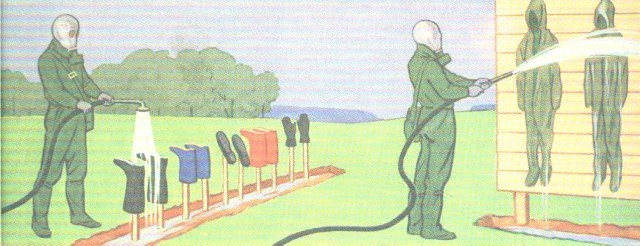
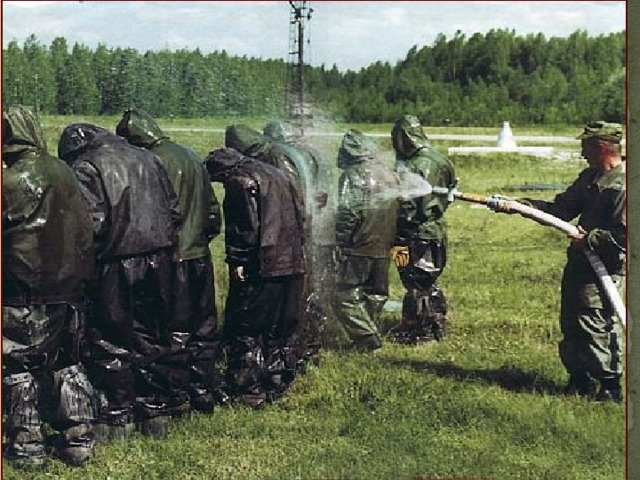
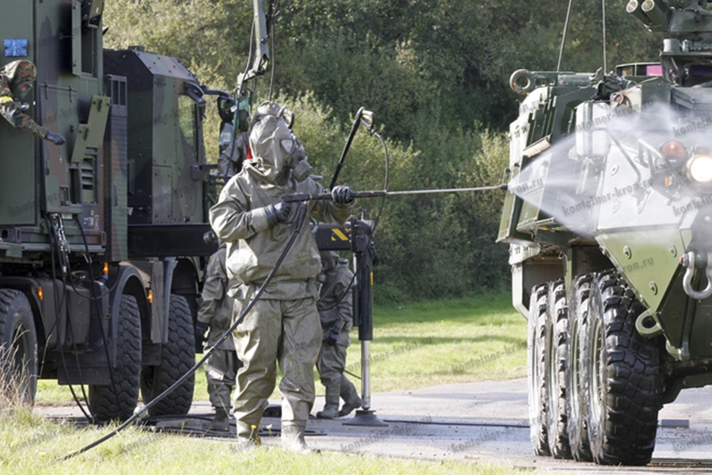

Что такое дегазация?
Дегазация — это процесс нейтрализации или удаления стойких ОВОтравляющие вещества — химические соединения, предназначенные для поражения живой силы. с поверхности обмундирования, военной техники, построек и местности.
💡 Химия нейтрализации
При дегазации используют реактивы, быстро меняющие химическую структуру яда. К примеру, соединения хлора окисляют иприт, превращая смертоносный маслянистый газ в нетоксичные продукты реакции.
Основные методы:

Химический метод
Применение дегазирующих растворов (окислителей, щелочей и хлорсодержащих средств), разрушающих токсиканты.

Физико-химические методы
Использование горячего воздуха, водяного пара, растворителей или адсорбентов для полного смыва или выжигания яда.

Спецобработка техники
Промывка машин и орудий с помощью авторазливочных станций (ARSАвторазливочная станция — спецмашина для дегазации и дезинфекции техники.) и войсковых комплектов.